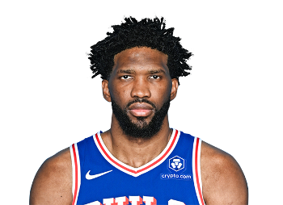

Top 10 jugadores mejor pagos de la NBA
Diez han sido los jugadores que han copado lo alto de la tabla de salarios en la NBA desde la temporada 1984-1985, año en el que la competición comenzó a recoger este tipo de datos.
Desde Magic Johnson a Stephen Curry, pasando por Patrick Ewing, Larry Bird, David Robinson, Michael Jordan, Shaquille O’Neal, Kevin Garnett, Kobe Bryant y LeBron James. Repasamos la lista desde la entrada de este nuevo siglo.

Stephen Curry
EST/PESO :1.88M, 83KG
FDN: 14/03/1988 (36)
Universidad: Davinson
Draft: 2003: Rd 1,Sel.7 (GS)
Estatus: Activo
Leer mas

Joel Embiid
Est/Peso: 2.13 m, 127 kg
FDN: 16/3/1994 (30)
Universidad: Kansas
Draft: 2014: Rd 1, Sel. 3 (PHI)
Estatus: Fuera
Leer mas
Nikola Jokic
Est/Peso: 2.11 m, 128 kg
FND: 19/02/1998 (29)
Draft: Rd, Sel. 41 (DEN)
Estatus: Activo
Experencia: 9º Temporada
Leer mas
Kevin Durant
Est/Peso: 2.11 m, 108 kg
FND: 19/09/1988 (29)
Draft:2007 Rd 1, Sel. 2 (SEA)
Estatus: Activo
Universidad: Texas
Leer mas
Bradley Beal
Est/Peso: 1.93 m, 93 kg
FND: 28/6/1993 (31)
Draft:2012:Rd 1, Sel. 3(WSH)
Estatus:Al dia
Universidad: Florida
Leer mas
Anthony Davis, el pilar de los Lakers en la temporada
Aunque los reflectores siempre están sobre LeBron James, es Anthony Davis quien regularmente sostiene las victorias de los Lakers.
Aunque los reflectores siempre están sobre LeBron James, es Anthony Davis y en ocasiones otros jugadores, Austin Reaves, por ejemplo, los que han sostenido las victorias de Los Angeles Lakers y el buen momento del equipo no es del todo ‘gracias’ a James.
En los últimos 10 juegos Anthony Davis ha superado a James en puntos y rebotes y cuando AD no jugó, caso Brooklyn Nets (102-101 para Lakers) fue Reaves el que tuvo un aporte mayor registrando 38 puntos por 29 de James.
Para dejar de lado las polémicas, vamos directo a los números que respaldan el valor de AD para la quinteta del coach JJ Redick.
Anthony Davis es actualmente el único jugador que promedia al menos 25 puntos y 2 tapones en la temporada 2024-25. La razón obedece a que Davis ha asumido un papel ligeramente diferente en el sistema de Redick, actuando en más ocasiones como pívot y no como alero (de ahí que hace unos días comentara que Lakers necesitaban un pívot).
Hasta ahora, la temporada de AD está siendo por demás sobresaliente, pues promedia 75.7 toques de balón, lo que sería su mayor cantidad en una temporada desde que comenzó el seguimiento de jugadores (2013-14), según Second Spectrum.